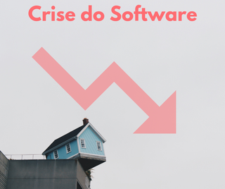

Crise de Software
• 25% dos projetos são cancelados;
• Tempo de desenvolvimento maior que o estimado;
• 75% não funcionam como planejado, problemas proporcionais a complexidade;
• Complexidade, má formalização;
• Má qualidade de métodos, linguagens e ferramentas;
• Falta de qualificação técnica, produtividade da pessoa e dificuldade de manter.
